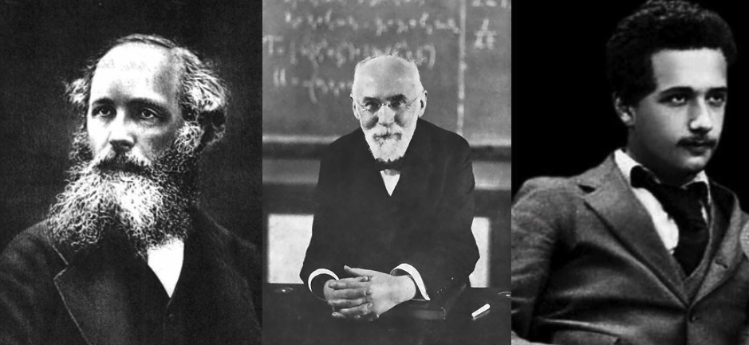

C6.1 Special Relativity - An Introduction#
C6.1.1 Motivation#
The objective with these notes is to work through the arguments that leads to the concepts of time dilation and length contraction. You will find that your textbook first introduce these concepts late in the book, however, the awareness of length contraction is incredible useful in gaining an understanding of the origin of the magnetic field. Furthermore, we will later discuss how the Newtonian momentum, force, and energy changes when objects are moving close to the speed of light. Receiving all the content information at once is difficult to absorb for most of us.
It is for these reason that I decide to introduce the basic concepts of special relativity in this phase: time dilation and length contraction. The beauty of these concepts is that they can be derived using geometry and algebra only. Before we dwell into these two fascinating consequences of relativity, I think a short background into the development of relativity is appropriate, and I hope some of you will find it fascinating. If not, you can skip straight to the next set of notes.
C6.1.2 Background#
Newtonian mechanics was a magnificent development that allowed us to describe the world around us as we saw it. Not only that, but its deterministic properties allowed us to make predictions and further develop the initial theories. At times, new mathematical tools was required and propelled both classical physics and mathematics to advanced stages.
With the experimental and theoretical advancement of electricity and magnetism came what is known as Gauss’s law for electric and magnetic fields, Faraday’s law of induction, and Ampere’s circuital law. These laws described the fundamental aspects that were observed and mostly developed through experiments. Today, they are all known under one umbrella term: Maxwell’s Equations. So how come Maxwell got his name attached to all of them? Maxwell had some incredible physical insight (it is few people with these kind of skills that change history: Newton, Maxwell, Einstein,…) that provided a missing piece to Ampere’s law. In doing so, the set of equations suddenly revealed a wave equation and the prediction/explanation of electromagnetic waves propagating at a specific speed: speed of light.
However, there was a major problem with Maxwell’s equations: they were not invariant under the Galilean transformation, which was thought to be required for all laws of physics. Instead, they were shown to be invariant under a Lorentz transformation, in which relative speeds between observers cannot exceed the speed of light. Furthermore, Maxwell’s equations predicted a constant value of the speed of light (in vacuum) which was independent of the observer. These two statements was so out of touch with the understanding of physics back then. Add to this that the Lorentz transformation was not derived based on physical principles, but rather mathematical principles. For decades, the vast majority of scientists, including leading scientists, refused the results and a major search for a relative medium (the luminiferous ether) for electromagnetic wave propagation was on-going but unsuccessful (difficult to find something that does not exists).
With Einstein’s insight and his postulates for special relativity, the existence of an ether was no longer needed. As it turns out, the Lorentz transformations are embedded in special relativity and one can argue that special relativity is embedded into Maxwell’s equations and Lorentz transformations, but no one discovered it.
It is intriguing to consider today’s biggest obstacle in physics: the understanding of dark energy and dark matter. What if these concepts are our ``ether’’? Will there be another person with some unimaginable physical insight that proves to change how we currently understand the world? One thing is for certain, this is a very exciting time to be a physicist!
C6.1.3 Special vs. General Relativity#
Special relativity is a special case of general relativity, hence its name. Special relativity is applicable in regions where the space-time curvature is negligible (or where the world lines or geodesics of space-time are straight lines). In mathematics, we say that the section of space-time is flat. Based on this, we may say that special relativity is a local effect. From special relativity we gain some non-intuitive consequences such as time dilation, length contraction, Energy-mass equivalence, loss of universal time (replaced with universal space-time). We should note that gravity plays no role in special relativity but was instead introduced with general relativity as it requires space-time curvature.
In the 3D Euclidean space in which Newtonian physics persist, spatial vectors are described by a tuple (a list of three numbers). Under a coordinate transformation, a vector does not change but its tuple will change to accommodate the different reference frame. Another way of saying this is that the entire universe can be described by some sort of grid system where the spatial vectors can be described in. Furthermore, Newtonian physics tells us that if we put synchronized clocks at every single grid point, these clocks will tick at the same rate. Hence, we can define an absolute time of reference and the elapsed time between events will be the same everywhere.
In Special relativity, space and time are intertwined and four coordinates are required: a four-vector. The mathematical framework in which the space-time interval between two events is invariant under coordinate transformation is known as Minkowski space. We will briefly play around with these four vectors later in the semester as it is quite entertaining (I might be biased, but I hope you will enjoy it too).
C6.1.4 Postulates of Special Relativity#
The derivation of special relativity is largely based on two explicit postulates proposed by Einstein:
The laws of physics are the same in all non-accelerating reference frames.
The speed of light is a fundamental constant in vacuum that is the same for any observer despite the nature of the emitting source.
C6.1.5 A Brief Note on Reference Frames#
We are restricting our analyses in this course to non-accelerating reference frames. From our classical physics point of view, our reference frames describe a point through (\(x\),\(y\),\(z\)), while in special relativity we add the time coordinate such that our reference frames are now describing both location and moment through (\(x\),\(y\),\(z\),\(t\)). We call such a point for an event. In summary, we have: point in space \(\rightarrow\) event in space-time.
In an experiment in a fantasy world and involving your favorite train, Einstein, now reincarnated as Shia LaBeuof, sits on the train and emits a light particle using a LED. To Einstein, the speed of the light particle is measured to be \(c = 300.0\) m/s in the direction of train motion. You are standing still on the ground and observed the train passing by at \(97.22\) m/s. How fast is the light particle traveling according to you?
# DIY Cell
Show code cell source
%reset -f
print('The speed of light does not depend on the relative motion of observers. You will measure c = 300.0 m/s.')
Show code cell output
The speed of light does not depend on the relative motion of observers. You will measure c = 300.0 m/s.
C6.1.6 Suggestive Readings/Videos#
George Gamow: Mr. Tompkins in Wonderland#
The second postulate of special relativity is the main point to wrap our mind around as it is so non-intutive from our everyday experiences. The idea of a fantasy world where the speed of light is much slower was used by famous physicist George Gamov in his book series Mr. Tompkins, which is a collection of short stories describing the modern physics (relativity and quantum physics) to the public by altering the physical constants such that we would observe these non-intuitive effects in our daily lives. I strongly recommend you read some of those stories.
Mr. Tompkins in Wonderland can be found at the Internet Archive. The sections of the book relevant to this topic are chapters 1 and 2.
The Fabric of Cosmos#
This is a 4-episode series on modern physics produced by NOVA and presented by physicist Brian Green. The first two episodes are relevant to our discussion but also include a little bit of general relativity.
PBS Space Time#
This is the coolest YouTube Channel that offers tons of short videos on the most amazing topics in modern physics. Here are a few select videos:
Are Space and Time and Illusion?
Can You Trust Your Eyes in Spacetime?
The Speed of Light is NOT About Light
How Luminiferous Aether Led to Relativity